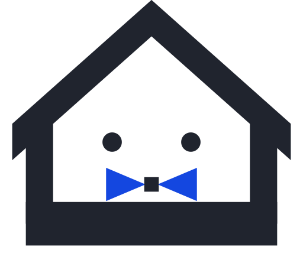
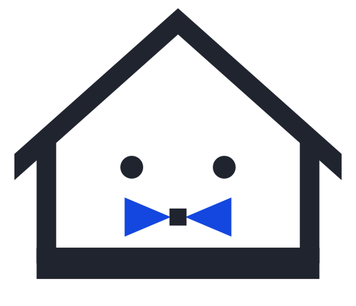
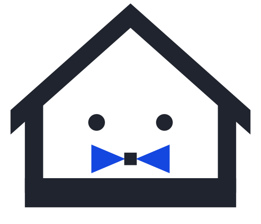
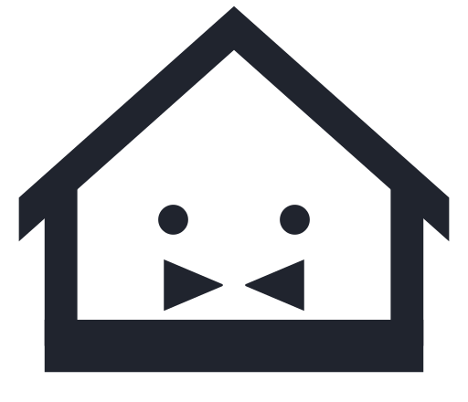
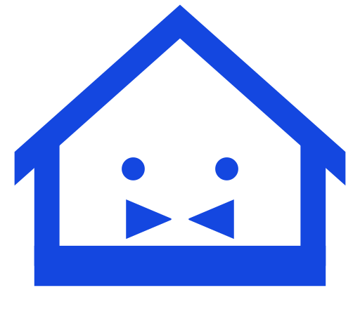
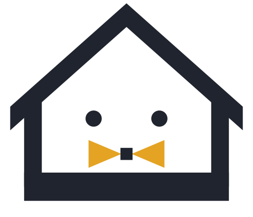
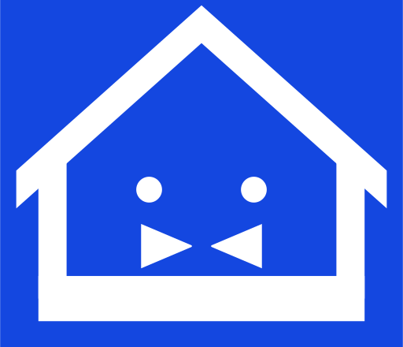
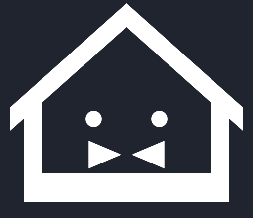
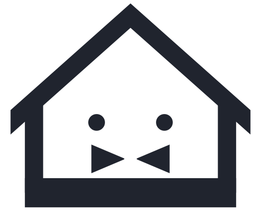
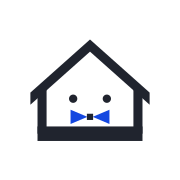

旧: 紺+金 / 線幅≈9% / 丸角 / 結び目=円
カタヅケ ロゴ調整案（現行テーマ整合・2026-09-04）
前提: 現行サイトは 明朝（Noto Serif JP 400）／主色 青 #1447e0／墨 #20242e／角丸0・影0／アイコン線幅1.5。ヘッダーは文字ワードマーク運用中で、旧PNG（紺#1e2a44＋金#e8b923・太線・丸角）はファビコン・OG用にのみ残存。
1. 変更点の比較（左: 旧PNG ／ 右: 提案A）

配色のみ更新（線幅9%・角0）

線幅5.5%（細身・査読で「ナビアイコンに負ける」と判定）

提案A: 線幅7% / 角0 / 結び目=正方形 / 庇の端は垂直切り
2. 配色バリエーション（A〜F）
A 墨＋青（推奨）

B 墨 単色

C 青 単色

D 墨＋金（参考・非推奨）

E 白抜き（青地）

F 白抜き（墨地）
3. ワードマークとの組み合わせ（ロックアップ）
横組み（ヘッダー22px）

カタヅケKATAZUKE横組み・B墨単色（青は英字のみ）
縦組み（OG画像・完了画面）
カタヅケKATAZUKE
白抜き（業者バナー・CTA帯）
カタヅケKATAZUKE
参考: 現行（文字のみ）
4. ヘッダー実寸モック（PC 72px ／ モバイル 60px）
カタヅケKATAZUKE
参考: 現行ヘッダー（文字のみ）
5. ファビコン・アプリアイコン
現行 icon.png（紺+金）
提案A 線画ファビコン（線幅8%・目を拡大）
提案A 面塗りファビコン（16px用・目なし）
カタヅケ｜家まるごと、まとめて片付け買取
ブラウザタブ想定

apple-icon 180px（白地・余白広め）